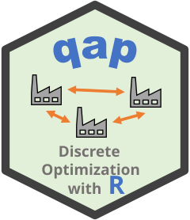
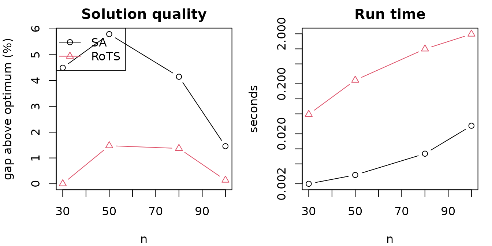

Comparing the Simulated Annealing and Robust Tabu Search Solvers
Source:vignettes/comparing_methods.Rmd
comparing_methods.RmdIntroduction
The qap package provides two heuristics for the
quadratic assignment problem (QAP), selected with the
method argument of qap():
-
"SA": the simulated annealing heuristic of Burkard and Rendl (1984), and -
"RoTS": the robust tabu search of Taillard (1991).
This vignette compares them on QAPLIB instances of increasing size, looking at the run time and at the quality of the solution. Quality is the percentage by which the objective value is above the known optimal (or best known) value stored with the instance.
Run times depend on your machine and the results depend on the random seed, so your numbers will differ from those shown here. Each comparison below is a single seeded run on a small set of instances, so it illustrates typical behavior rather than being a rigorous benchmark.
Comparison
We solve instances with 30 to 100 facilities from QAPLib. Each method gets 3 random restarts and uses its default settings.
instances <- c("tai30a", "tai50a", "tai80a", "sko100a")
reps <- 3
run <- function(p, method, ...) {
time <- system.time(a <- qap(p$A, p$B, method = method, ...))[["elapsed"]]
c(obj = unname(attr(a, "obj")), time = time)
}
res <- do.call(rbind, lapply(instances, function(f) {
p <- read_qaplib(system.file("qaplib", paste0(f, ".dat"), package = "qap"))
sa <- run(p, "SA", rep = reps)
ro <- run(p, "RoTS", rep = reps)
data.frame(
instance = f,
n = nrow(p$A),
opt = p$opt,
SA_gap = (sa[["obj"]] - p$opt) / p$opt * 100,
RoTS_gap = (ro[["obj"]] - p$opt) / p$opt * 100,
SA_time = sa[["time"]],
RoTS_time = ro[["time"]]
)
}))
knitr::kable(res, digits = 3, row.names = FALSE,
col.names = c("Instance", "n", "Optimum", "SA gap (%)", "RoTS gap (%)",
"SA time (s)", "RoTS time (s)"))| Instance | n | Optimum | SA gap (%) | RoTS gap (%) | SA time (s) | RoTS time (s) |
|---|---|---|---|---|---|---|
| tai30a | 30 | 1818146 | 4.495 | 0.000 | 0.002 | 0.049 |
| tai50a | 50 | 4938796 | 5.799 | 1.475 | 0.003 | 0.236 |
| tai80a | 80 | 13499184 | 4.147 | 1.370 | 0.008 | 0.995 |
| sko100a | 100 | 152002 | 1.457 | 0.141 | 0.029 | 1.973 |
op <- par(mfrow = c(1, 2), mar = c(4, 4, 2, 1))
matplot(res$n, res[, c("SA_gap", "RoTS_gap")], type = "b", pch = 1:2,
lty = 1, col = 1:2, xlab = "n", ylab = "gap above optimum (%)",
main = "Solution quality")
legend("topleft", legend = c("SA", "RoTS"), pch = 1:2, col = 1:2, lty = 1)
matplot(res$n, res[, c("SA_time", "RoTS_time")], type = "b", pch = 1:2,
lty = 1, col = 1:2, log = "y", xlab = "n", ylab = "seconds",
main = "Run time")
par(op)Simulated annealing finishes much faster, but its solutions are
typically further from the optimum. The solution can be modestly
improved by tuning (increasing) ft and
maxsteps.
Robust tabu search spends more time and finds better solutions. Its
cost per iteration grows with the number of swap moves, which is
quadratic in n, and its default number of iterations grows
linearly with n. Its run time therefore grows roughly
cubically with n.
Larger QAPLIB instances such as tai256c (256 facilities)
can be added to instances, but a single tabu search restart
then takes tens of seconds, so we leave them out to keep this vignette
fast to build.
Recommendations
- Use
method = "SA"when you need a good solution very quickly, for example as a starting point or inside a loop that solves many problems. Increasereporftandmaxstepsto trade time for quality. - Use
method = "RoTS"when solution quality matters more than run time, or when you want better solutions from a single run. You can increaseiterorrepfor harder or larger instances. - Compare the objective value with the known optimum for benchmark
instances, and use
set.seed()to make runs reproducible.
References
- Hahsler M (2026). qap: Heuristics for the Quadratic Assignment Problem (QAP). doi:10.32614/CRAN.package.qap https://doi.org/10.32614/CRAN.package.qap. R package version 0.2-0, https://CRAN.R-project.org/package=qap.
- Burkard, R. E. and Rendl, F. (1984). A thermodynamically motivated simulation procedure for combinatorial optimization problems. European Journal of Operational Research, 17(2), 169-174. https://doi.org/10.1016/0377-2217(84)90231-5
- Taillard, E. (1991). Robust taboo search for the quadratic assignment problem. Parallel Computing, 17(4-5), 443-455. https://doi.org/10.1016/S0167-8191(05)80147-4